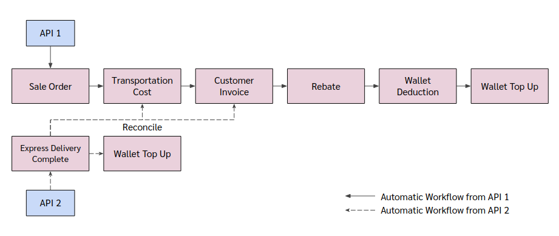

> Automatic Workflow¶
- eCommerce
eCommerce Standard
- eCommerce Consignment
eCommerce Consignment Fix GP
eCommerce Consignment Var GP
Express
eCommerce¶
Automatic Flow ของ eCommerce แบ่งตามการยิง APIs ออกเป็น 2 Flow ดังนี้
eCommerce Standard
eCommerce Consignment
eCommerce Standard¶

API 1 จะยิงเข้าระบบ Odoo ทาง Sale Order (sale.order) และหลังจากที่ API 1 ถูกยิงเข้ามา ในระบบจะเกิดกระบวนการอัตโนมัติ ดังนี้
สร้าง Sale Order
คำนวณรายได้ต่างๆแล้วเพิ่มเข้าไปใน Sale Order
ยืนยัน Sale Order
สร้าง Delivery Order เพื่อบันทึกการส่งสินค้า (ตอนนี้ไม่ได้ใช้)
สร้าง Journal Entry เพื่อบันทึกประมาณการค่าขนส่ง (TC)
สร้าง Customer Invoice เพื่อบันทึกรายได้ ภาษี(ถ้ามี) และลูกหนี้การค้า
API 2 จะยิงเข้าระบบ Odoo ทาง Delivery Complete (sunteen.delivery.complete) และหลังจากที่ API 2 ถูกยิงเข้ามา ในระบบจะเกิดกระบวนการอัตโนมัติ ดังนี้
สร้าง Journal Entry เพื่อบันทึกต้นทุนค่าบริการ ส่วนแบ่งค่านายหน้า และเจ้าหนี้การค้า (DC)
กลับลูกหนี้จาก Customer เป็น Payment Provider
กลับประมาณการค่าขนส่ง
eCommerce Consignment¶
eCommerce Consignment สามารถแบ่งตามวิธีการคำนวณรายได้ ออกเป็น 2 รูปแบบ ดังนี้
eCommerce Consignment Fix GP
eCommerce Consignment Var GP
ถึงแม้ว่า eCommerce Consignment จะมีการคำนวณรายได้ 2 รูปแบบ แต่การยิง APIs เข้าระบบ Odoo ของ eCommerce Consignment Fix GP และ eCommerce Consignment Var GP เหมือนกัน

API 1 จะยิงเข้าระบบ Odoo ทาง Transportation Cost (sunteen.record.transportation.cost) และหลังจากที่ API 1 ถูกยิงเข้ามา ในระบบจะเกิดกระบวนการอัตโนมัติ ดังนี้
สร้าง Journal Entry เพื่อบันทึกประมาณการค่าขนส่ง (TC)
API 2 จะยิงเข้าระบบ Odoo ทาง Sale Order (sale.order) และหลังจากที่ API 2 ถูกยิงเข้ามา ในระบบจะเกิดกระบวนการอัตโนมัติ ดังนี้
สร้าง Sale Order
คำนวณรายได้ต่างๆแล้วเพิ่มเข้าไปใน Sale Order
ยืนยัน Sale Order
สร้าง Delivery Order เพื่อบันทึกการส่งสินค้า (ตอนนี้ไม่ได้ใช้)
สร้าง Customer Invoice เพื่อบันทึกรายได้ ภาษี(ถ้ามี) และลูกหนี้การค้า
สร้าง Journal Entry เพื่อบันทึกเจ้าหนี้ฝากขาย โดยการกลับเจ้าหนี้พักมาเป็นเจ้าหนี้ฝากขาย (APT)
สร้าง Journal Entry เพื่อบันทึกต้นทุนค่าบริการ ส่วนแบ่งค่านายหน้า และเจ้าหนี้การค้า (DC)
กลับลูกหนี้จาก Customer เป็น Payment Provider
กลับประมาณการค่าขนส่ง
Express¶
API 1 จะยิงเข้าระบบ Odoo ทาง Sale Order (sale.order) และหลังจากที่ API 1 ถูกยิงเข้ามา ในระบบจะเกิดกระบวนการอัตโนมัติ ดังนี้
สร้างและยืนยัน Sale Order
สร้าง Delivery Order เพื่อบันทึกการส่งสินค้า (ตอนนี้ไม่ได้ใช้)
สร้าง Journal Entry เพื่อบันทึกประมาณการค่าขนส่ง (TC)
สร้าง Customer Invoice เพื่อบันทึกรายได้ ภาษี(ถ้ามี) และลูกหนี้การค้า
สร้าง Journal Entry เพื่อบันทึกค่า Rebate เมื่อ Agent ส่งสินค้ากับ 945 (REBATE)
สร้าง Journal Entry เพื่อหักเงินออกจาก Wallet (WD)
สร้าง Journal Entry เพื่อเติมเงินคืนใน Wallet (WT)
API 2 จะยิงเข้าระบบ Odoo ทาง Express Delivery Complete (sunteen.express.delivery.complete) และหลังจากที่ API 2 ถูกยิงเข้ามา ในระบบจะเกิดกระบวนการอัตโนมัติ ดังนี้
สร้าง Journal Entry เพื่อบันทึกรายได้จากการบริการเก็บเงินปลายทาง ต้นทุนค่าบริการ และเจ้าหนี้การค้า (DC)
กลับประมาณการค่าขนส่ง
สร้าง Journal Entry เพื่อเติมเงินคืนใน Wallet (WT)